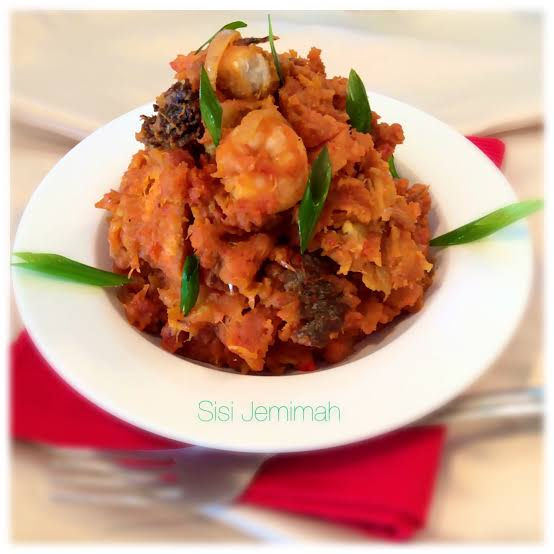

Yam porridge

Yam porridge, also known as asaro, is a popular Nigerian dish made by cooking yam cubes in a flavorful sauce of tomatoes, peppers, onions, palm oil, and seasonings until the yams become soft and creamy
It is a hearty, nutritious meal that can be enjoyed on its own or with fish, meat, or vegetables, making it a favorite comfort food across many parts of Nigeria.
Ingredients
- 1 medium yam, peeled and cut into cubes
- 1/4 cup palm oil
- 2–3 medium tomatoes, chopped or blended
- 1 red bell pepper, blended
- 1–2 Scotch bonnet peppers (optional, for heat)
- 1 medium onion, chopped
- 2–3 seasoning cubes
- Salt, to taste
- 1–2 tablespoons ground crayfish (optional, for extra flavor)
- Smoked fish, dried fish, or fresh fish (optional)
- Cooked beef or chicken (optional)
- Spinach or pumpkin leaves (ugu), chopped (optional)
- 3–4 cups water or stock
Steps
- Peel the yam and cut it into medium-sized cubes. Chop or blend the tomatoes, bell pepper, Scotch bonnet pepper, and onion.
- Heat the palm oil in a pot over medium heat. Add the onions and cook for 2–3 minutes, then add the blended tomatoes and peppers. Cook for about 8–10 minutes until the sauce thickens.
- Stir in the yam cubes and mix well so they are coated with the sauce.
- Add enough water or stock to cover the yam. Add the seasoning cubes, salt, and ground crayfish if using.
- Cover the pot and cook for 20–30 minutes, stirring occasionally, until the yam is soft and begins to break apart.
- If using smoked fish, meat, or leafy vegetables such as spinach or ugu, add them during the last 5–10 minutes of cooking.
- Lightly mash some of the yam with a spoon to thicken the porridge, then stir gently. Taste and adjust the seasoning if needed.
Home